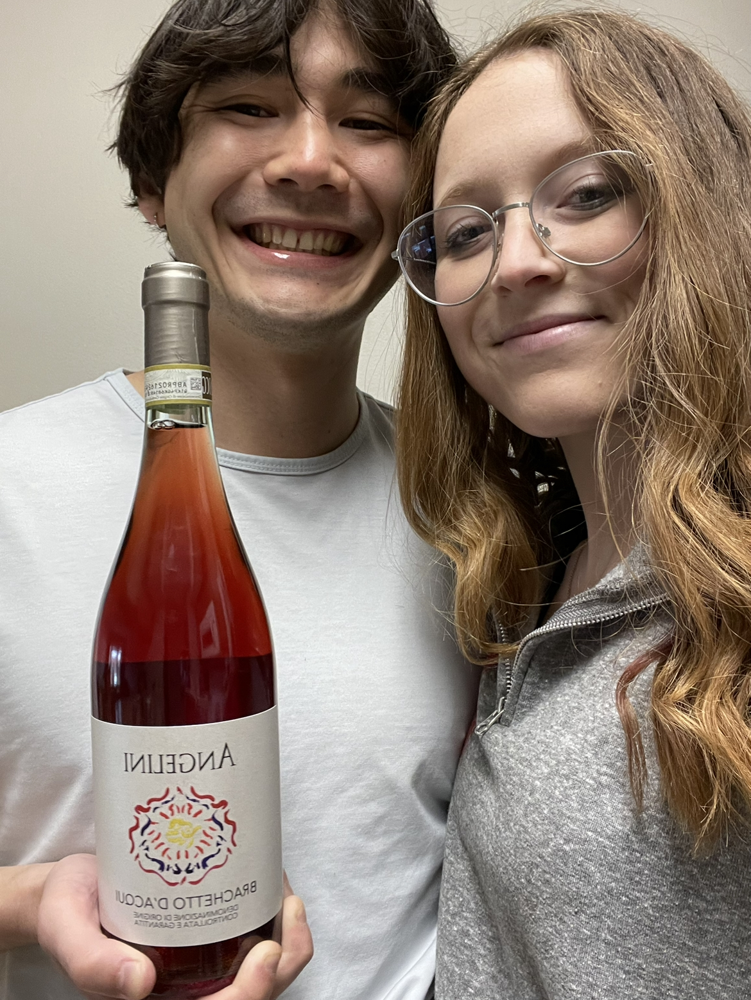

Brachetto
What is it??
Brachetto is a red grape produced in the Piedmont region of Italy [1]. It can be either still or semi-sparkling, and it generally has some sweetness [1]. The ABV of Brachetto is also usually less than that of other red wines. Brachetto is a DOCG (
We found this wine in Omaha at Howard Street Wine Merchant, which has a good selection of rarer wines than can be found in Lincoln. This Brachetto was shelved with dessert wines, which confused us originally, but makes sense after tasting it! It is definitely on the sweeter side of wines and probably on the sweeter and lighter side of Brachetto wine varieties. Primary flavors listed in the book are candied strawberries, orange zest, black currant, apricot, and cream [3].
We had this as an apertif, which did work well. This wine would probably also work well paired with chocolate desserts or tarts.
Molly's Rating and Tasting Notes
9.6. A slight sparkle to cap off a delightful wine! Cherry and floral notes on the tongue, candied strawberry on the tongue. The finish is creamy, but the wine is light and easy to drink. I could drink this any day of the week with absolutely no problems. This would go well with desserts or appetizers, would definitely recommend to anyone curious about a sweet red that isn't as heavy as other dessert wines.
Ryan's Rating and Tasting Notes
8.5. On the nose I'm offered a decent dose of hibiscus, cherry blossom, and strawberry. Hints of rubber come through very slightly, giving it a very interesting and quizzical quality. Upon tasting, the first thing I notice is the sweetness. I get white peach and strawberry pie as the main flavors. At the end there is a milkiness, that when mixed with the aforementioned tastes, reminds me of Calpico. In the mouth it is very light. The fizziness gives the mouth a very full feeling, although the lack of depth in the wine does not fill in the space provided. This hollowness isn't unpleasant, but is unfamiliar and quite intriguing. I would definitely recommend this wine, as it is sweet, easy, and fun. Just like me ;)
References
[1] J. Bastianich and D. Lynch.
[2] J. Robinson, J. Harding, eds. "DOCG". The Oxford Companion to Wine (4th ed.). Oxford University Press. 2015.
[3] Madeline Puckette and Justin Hammack. Wine Folly: The Master Guide. Avery - A Penguin Imprint, New York, NY, 2018.
[4] Brachetto https://winefolly.com/grapes/brachetto/ Wine Folly. Accessed March 2023.
Suggestion of what we should try next?
Let us know via the comment box below!